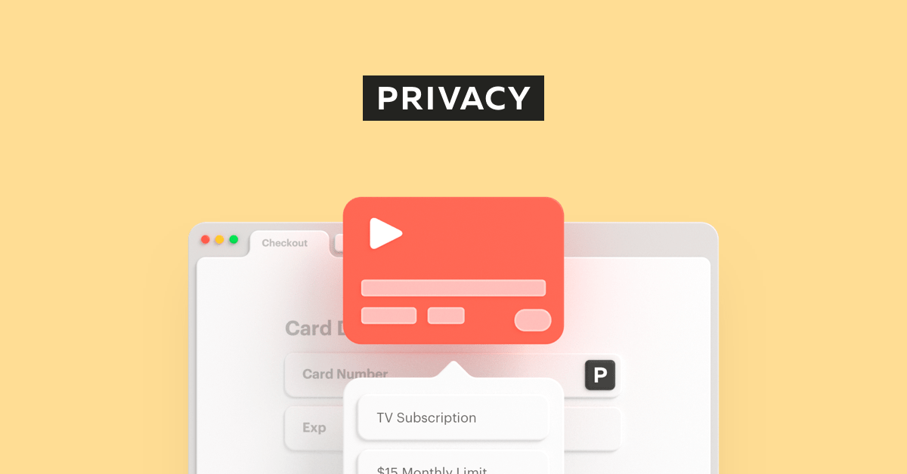

Seguridad digital para el dia a dia
La seguridad digital es un asunto que debería hablarse en la vida cotidiana porque no querrías que un día al revisar la app de tu banco tu cuenta esté vacía o que alguien esté utilizando tu cuenta para registrarse en sitios peligrosos haciéndose pasar por ti.
El robo, las estafas y la suplantación de identidad son peligros que siempre existieron y en una era digitalizada como la nuestra mucho más. Así que como usuarios de un mundo cada día más dependiente de internet sería bueno conocer qué opciones tenemos para poder estar más seguros.
1. Bloqueo de dispositivos:
Es importante tener un pin o contraseña para bloquear tus dispositivos. Ya sea tu celular u otro dispositivo siempre es recomendable contar con una contraseña para evitar el fácil acceso al mismo en caso de ser extraviado o simplemente quieres mantener tu privacidad.
2. Descarga de aplicaciones:
No descargues aplicaciones no confiables. Es muy fácil acceder a aplicaciones y cualquiera podría ser maliciosa así que antes de descargar revisa los comentarios y trata de hacerlo de las tiendas de apps oficiales y no instalarlas por tu propia cuenta.
3. Actualizaciones del sistema:
Manten actualizado tu sistema. Cada cierto tiempo se crean parches de seguridad o soluciones a problemas que van apareciendo por lo que es recomendable actualizar tu sistema para obtener esas últimas mejoras.
4. Redes Wi-Fii:
No te conectes a cualquier red Wi-Fii pública porque fácilmente una persona podría crear una red en la que intercepte todo tu tránsito de internet. Incluidas tus contraseñas, mensajes y prácticamente todos los datos que estés enviando.
Servicios y herramientas que te podrían ayudar
Servicios de seguridad
Empecemos por los servicios de seguridad
PRIVACY
Privacy es un sitio web que te permite crear una tarjeta de crédito virtual y de forma gratuita puedes crear una para cada suscripción online o compra y establecer el límite de expiración para cada una de esas tarjetas.
Con este servicio básicamente nunca tendrías que usar el número real de tarjeta de crédito o débito y podrías controlar tus compras online de manera segura si utilizas una de estas tarjetas virtuales para servicios de suscripción podrías colocar un límite de gasto o simplemente desactivar la tarjeta. A demás posee una extensión de chrome y una app móvil que te permite administrar tus múltiples tarjetas e incluso llenar los datos automáticamente en formularios de una manera bastante rápida.
ProtonMail
ProtonMail es un servicio de correos que está creado teniendo muy en cuenta la privacidad. Usa un cifrado de extremo a extremo para los correos. Lo que les evita incluso a ellos mismos el poder descifrar los emails. A demás el código es open source lo que quiere decir que puedes ver el código fuente para revisar sus funcionalidades o editarlo si gustas. También te permite tener una cuenta gratis similar a Gmail. Aunque si decides cambiar de plan o empezar a pagar esta opción te permite tener múltiples cuentas con más espacio y un dominio personalizado.
Vendría a ser una alternativa directa de Gmail si no quieres darle tanto control a Google. Además su app móvil y web están lo suficientemente bien diseñadas y muy a fin de ser una alternativa de Gmail. También tiene otros dos servicios como lo son Proton drive y Protón Calendar. Los que serían alternativas a otros servicios de Google que están integrados con sus servicios de correo.
Contraseñas:
Si hasta este momento lo único que utiliza para proteger tus cuentas son contraseñas es mejor que conozcas la autenticación en dos pasos o la autenticación multifactor.
Autenticacion en dos pasos:
La autenticación de dos pasos o de dos factores es lo mejor que puedes hacer al día de hoy para proteger tus cuentas y no depender tan solo de una contraseña.
Básicamente estas son aplicaciones que generan un código o también llamado token que tienes que colocar luego de ingresar tu contraseña en múltiples servicios que utilices. Es decir que si utilizas google o facebook o una app de banco tendrías que colocar tu contraseña y luego un token generado por tu aplicación móvil. Esto quiere decir que aún así si alguien llega a conocer tu contraseña no podría ingresar así que coloque la segunda verificación o el código que genere tu celular así que es súper recomendado que lo utilices en sus cuentas principales como podría ser tu cuenta de correo.
Ese método de autenticación también funciona por sms pero no es tan seguro como usar una aplicación. De hecho si hablamos de aplicaciones que ofrecen segundo factor de indicación existen muchas pero una de las mas conocidas es Out y aunque hay otras opciones como Google Autenticator, Microsoft Autenticator y Duo.
VPN:
Navegar por la web o realizar transacciones en una red Wi-Fii no segura significa que podrías estar exponiendo tu información privada y tus hábitos de navegación. Es por eso que una red privada virtual mejor conocida como VPN es una necesidad para cualquier persona preocupada por su seguridad y privacidad en línea.
Básicamente una VPN es un servicio que cifra tus datos y evita que pueda saberse de que dispositivo originalmente se está navegando. Estas son muy utilizadas por empresas para mantener conexiones seguras dentro de la organización pero también pueden ser utilizadas por cualquier persona que quizás quiera acceder a contenido de otro país. Por ejemplo si viajas a China no podrías acceder a facebook a menos que uses una VPN. Si quieres ver contenido de Netflix de E.E.U.U que no está disponible en Latinoamérica tendrías que utilizar una VPN
Debes utilizar una si quieres ocultar tu ubicación actual o comprar en línea de manera segura u ocultar tus datos al momento de navegar o si simplemente quieres mantener el anonimato.
La VPN mas recomendada:
Una muy conocida y recomendada hasta el dia de hoy es NordVPN, el cual es un servicio de VPN muy popular y tiene más de 5000 servidores en 59 países y te permite conectarte de manera privada.
Es muy rápida para navegar además tiene una política estricta de no guardar registros, un interruptor de apagado automático y la protección contra fugas de dns.
Navegadores
Ahora tambien hablemos de navegadores seguros
Cuando hablamos de navegadores enfocados en privacidad algunos que deberías tener en cuenta serían Firefox Tor y Brave.
Brave
Entre las tres opciones Brave es el que es mucho más simple de utilizar y algo que gusta a muchos es que al estar basado en Chromium, puede hacer básicamente todo lo que se hace en Chrome, solo que éste viene con otras características adicionales como bloquear el rastreo por parte de sitios web.
Posee un bloqueador de anuncios integrados lo que no tan solo evita que los sitios web que visitas se sature de ventanas emergentes sino que también favorece una carga rápida de sitios eso quiere decir que con brave no tan solo bloqueas los anuncios sino que navegas mucho más rápidos al bloquearlos. Eso funciona tanto en su versión móvil como de escritorio y una diferencia interesante es que a diferencia de otros navegadores que te permiten tener un modo privado que sólo esconden tu historial frente a otras personas en Brave se te permite utilizar una pestaña de Thor. Este no sólo esconde tu historial sino que oculta tu ubicación frente sitios que visitas y enruta tus datos de navegación a través de varios servidores hasta que llega a tu destino.
Extensiones
Estar seguro no acaba en tan solo utilizar un navegador es por eso que hay extensiones que resuelven problemas específicos dentro del navegador.
Algunas de ellas son Password Managers.

Los Password Manager (administradores de contraseñas) básicamente son software que controlan todas tus contraseñas en un solo lugar. Estas son guardadas en una base de datos y son cifradas. Como usuario tan solo tienes que memorizar una de estas contraseñas.
Tambien te permiten generar automáticamente una contraseña segura evitando que tengan que utilizar la misma contraseña en múltiples sitios web. Además te permite estar alerta de sitios falsos, suplantados o sitios phising al no permitir de rellenarte el correo y la contraseña si el sitio que estás visitando no es un sitio verificado y algo muy interesante es que también te permiten heredar tu cuenta a un usuario que designes en caso de que fallezcas o de que pase algo con tu cuenta lo que es conocido en la internet como Herencia digital.
Password Manager recomendados:
One password, Nord-pass, Bitwarden.
Buscadores
Todos sabemos que el buscador de google básicamente es el índice de internet. Es un servicio que tiene tanto trabajo por detrás que parece prácticamente imposible de competir con él, pero cuando hablamos de privacidad sabemos que el buscador de google tiene muchos asuntos a considerar
DuckDuckGo

Es por eso que una alternativa es usar un buscador que se enfoque en privacidad y seguridad. Un ejemplo es DuckDuckGo. Este buscador No usa cookies. No recuerda tu dirección ip y no crea un perfil basado en tus búsquedas. Lo que quiere decir que proporcionan los mismos resultados a todos y no se basa en ninguna navegación previa. A demás hay una extensión bastante simple de utilizar en los navegadores llamada DuckDuckGo Essentials lo cual te permite bloquear los rastreadores ocultos de internet y te permite navegar de manera segura desde cualquier navegador.
Ublock Origin
uBlock Origin es una extensión de navegador de código abierto para filtrado de contenido y bloqueo de publicidad en línea. La extensión está disponible para los navegadores safari, Firefox y navegadores basados en chromium. Destaca por su poco uso de memoria a comparación de otras extenciones similares. No es que los anuncios sean algo que no se necesiten. Después de todo las pequeñas empresas pueden llegar a clientes potenciales y crecer gracias a la publicidad. A demás se pueden conocer productos y servicios gracias a la publicidad.
El problema está en el seguimiento y la recopilación de datos innecesarios que muchas empresas venden.
uBlock Origin hace el mejor trabajo bloqueando estos rastreadores y tiene la opción de incluir en una lista blanca los sitios que quieres admitir que muestren anuncios.
HTTPS Everywhere
HTTPS Everywhere es una extensión que obliga a un sitio web a usar la versión https si está disponible.
Muchos sitios web todavía no utilizan la versión https de forma predeterminada o tienen enlaces dentro del sitio que pueden llevar a usuarios a sitios no seguros. Esta extensión lo corrige simplemente instalando https en todos los sitios que visites desde tu navegador.
Seguridad en la camara
Una de las recomendaciones poco comunes pero a tener en consideración es tapar tu cámara web. Es algo nada difícil de hacer. Tenemos en cuenta que hay un tipo de ataque por parte de ciber delincuentes en los cuales pueden controlar tu cámara web de manera remota sin que te des cuenta o sin que siquiera la luz se encienda y en estadística este ataque es uno de los menos frecuentes pero es debido que es uno de los ataques menos detectados por usuarios.
Y por ultimo esperamos que esta informacion te haya servido. En SharkSecurity podes encontrar muchas herramientas para informarte y protegerte.
Ahora sabes mucho mas sobre seguridad digital.